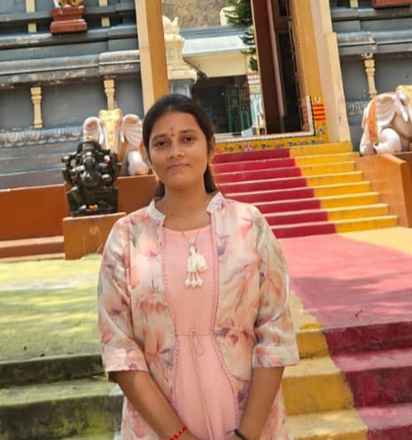

IT Undergraduate | Aspiring Java Full Stack Developer
I was born in Vijayawada, Andhra Pradesh. I belong to a nuclear family. I am pursuing B.Tech 4th year in Vasireddy Venkatadri Institute of Technology. My short-term goal is to get a job in a reputed company and my long-term goal is to reach a higher position in the same company. I have knowledge in Java, HTML, CSS, and JavaScript.